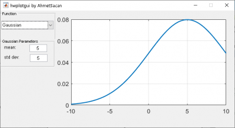
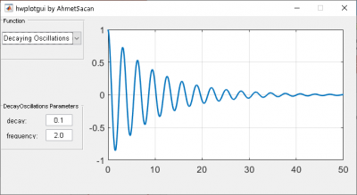

Function Plot GUI
Create a GUI (in MATLAB or Python) that displays Gaussian Probability Function or a Decaying Oscillations function. Snapshots of the GUI you are expected to create are shown below:
 
The Gaussian PDF if defined as \(\frac{1}{\sigma\sqrt{2\pi}} e^{-\frac{(x-\mu)^2}{2\sigma^2}}\)
The Decaying Oscillations Function is defined as \(e^{-Ax}\cos\left(Bx\right)\), where A is the decay coefficient and B is the frequency.
Your GUI needs to have the following features (penalties for missing features shown as negative scores):
- Having a GUI that runs cross-platform (on Windows or Mac) is a prerequisite for grading [-100%]
- GUI Window title with your full name(s) [-5%]
- A dropdown menu to select Gaussian or Decaying Oscillations function [-20%]
- Selecting one of these functions in the menu should display the corresponding plot
- Automatically show/hide the parameters [-5%]
- When Gaussian is selected, the Gaussian parameters should be shown and the Decaying Oscillations should be hidden.
- When Decaying Oscillations is selected, the Gaussian parameters should be hidden and the Decaying Oscillations parameters should be shown.
- Each parameter should have a static text describing it and a text box for the user to change its value.
- Parameters should have their default values when the GUI is first executed [-5%]
- The Gaussian parameters should have default values
mean = 5andstd = 5 - The Decaying Oscillations parameters should have default values
decay = 0.1, andfrequency = 2.0 - The plots should be shown for the following x-axis ranges [-5%]
- For Gaussian: \([-10, 10]\)
- For Decaying Oscillations: \([0, 50]\)
- The Gaussian parameters should have default values
- The plot should update accordingly when a parameter value is modified by the user [-10%]
- If a parameter value is modified to an invalid value (i.e., not a number), a message should appear at the bottom of the GUI to warn the user, and the plot should be empty. The message should specify which parameter is invalid; if there are more than one invalid parameters, mentioning one of them is sufficient [-5%]
- Any GUI elements that you refer to in your code should have a descriptive and meaningful name [-10%]
- GUI elements that you create once to show on the GUI and never make use of later in the code can have their default names (MATLAB) and should not be saved as permanent variables (Python)
- Create a demonstration report [-20%]
- Download and fill in hwplotgui_report_template.docx
- Include snapshots of executing your GUI as indicated in the report template
- See a sample report you are expected to produce
- Your program should correctly produce each of the snapshots indicated in the report template [-10% for each snapshot]
- Do not manually edit/photoshop images to artificially produce the figures in your report [-100%]
- You must include unmodified snapshots of your GUI in your report; resize your figures to fit within the page width
- No separate windows, message boxes, dialogs, figures, etc. should be created. Plots should be shown within the GUI [-5% each unique instance]